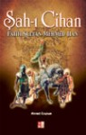

Bir çok web kod yazarı için sayfaların yavaş açılması büyük bir sorundur. Bu sorunun çözümü için çeşitli metotlar uygulanır. Farklı araçlar ile testler yapılır çözümler üretilmeye çalışılır. Sonuçta en kararlı hale ulaşılmaya çalışılır. Bende bir test aracı ile(Firefox - FireBug - YSlow) test ediyorum. Test ettiğim siteler HTTP isteklerinin çokluğundan dolayı ...
devamını okuFloat Uygulanmış Elementleri Tam Kapsayamama Sorunu İpuçları
1- Firefox 3'de form elemenalarının Tıklanamaması Sorunu
Daha önce bir kaç kez bahsettiğim ve web kod yazarlarının birçok zaman karşılaştığı 'Float uygulanmış elementlerin kapsayamama sorunu' bugün xpur(Gökhan)'un bir sorusu üzerine bu yazıyı yazma gereği duydum. Kapsayamama sorunu yaşadığımız katman içinde eğer selectbox var ise Firefox 3'de ...
devamını okuŞâh-ı Cihan Fatih Sultan Mehmed Han - Ahmet Çoşkun
Bilemiyorum ismimi aldığım için mi, ama Fatih Sultan Mehmet ile ilgili bir çok kitap okdum. Kitapçıda görünce dayanamıyorum alıyorum. Genel hatları ile Fatih Sultan Mehmet'i anlatan güzel ayrıntılar içeren bir eser. Bir yerdeki tespit çok hoşuma gitti sizlerle paylaşayım. Namık Kemal'in bir tespiti aslında bu "Galibiyetlerini Fatih ünvanını ...
devamını okuWindows Vista / Windows Defender Güncellemesindeki Sorunu ve Çözümü
İşletim sistemi olarak Vista kullanıyorum, genel itibari ile pek sorunum yok. Gayet iyi bir performans ile çalışıyorum. Tek sorunum güncelleme yaparken her zaman Windows Defender programı güncellemesini yükleyememesi idi. Bunu uzun süre erteledikten sonra çözmeye karar verdim. Biraz araştırınca kolay bir şey olduğu ortaya çıktı. Sizlerle paylaşmak istedim. Son güncellemeyi ...
devamını okuWordPress 2.7'ye geçtikten sonraki sorunlarım - 1
WordPress 2.7 sürümünün çok güzel özellikleri var. Ancak yeni sürüme yükselttikten sonra bir kaç sorunumu oldu. Zamanım olmadığı için bu sorunlar uzunca bir süre devam etti ve etmekte. Bunlardan bir tanesi olan yazı veya yorum yazınca beyaz ekran gelip yönlendirme yapmaması idi. Bugün biraz araştırınca bunun bir kaç sebebi ...
devamını okuOperasyon Ergenekon - Şamil Tayyar
Bu kitabı bir arkadaşımın önerisi ile okumaya başladım, genelde tarih okurum güncel meselelere dair pek kitap okumuyorum. Bu konuda şöyle bir durum var; Konu her ne kadar güncel görünsede aslında devlet gelenekleri açısından düşünüldüğünde gerek Türkiye Cumhuriyeti ve Osmanlı İmparatorluğu döneminde benzer yapılanmalarında mevcut olduğunu görüyoruz. Yani bir bakıma tarih ...
devamını okusIFR, Flash Player10 ve Firefox sorunu
Bir çok projemde sIFR kullanıyorum. Yaklaşık 1-2 ay önce Flash Player 10 çıktıktan sonra sIFR kullandığım başlıklarımda sorun çıkmaya başladı. İlk başta anlayamadım. Biraz araştırınca sIFR'ın bazı tarayıcılarda(Firefox ve Safari) Flash Player'ı tespit edemediği için böyle bir sorun ile karşılaşıldığı söyleniyor. Çözüm için yapmamız gerek sifr.js ...
devamını okuKuleli 1919 - Şeref Tipi
Meleketimizin zor günlerinde nelerin olduğunu bizlere anlatan güzel bir hatıra kitabı. O günleri okudukça mevcut durmumuzun değerini daha iyi anlıyoruz. Kitap her ne kadar Kuleli diye anılsada, Bursa Işıklar lisesi ve Şeref Tipi'nin belli yaşlarda yazdığı günlük notlarını içeriyor. Kitapta işgal yılları, okul hayatı, arkadaşlıklar, memletin hali farklı bir ...
devamını okuBir Fransız Yalanı - Georges-Marc Benamou
Fransızıların Cezayir'de yaptıklarını farklı bir şekilde el alan yazar bizlere yapılan soykırımı tüm açıklığı ile anlatıyor. Birçok belge ve araştırmaya dayanan kitap Cumhurbaşkanını danışmanı bir Fransız yazar tarafından yazılmış olmasıda farklı bir durum. Türkiye'ye Ermeni sözde "soykırımı" konusunda en çok tavır koyan ve bu konuda yasa çıkaran, heykel ...
devamını okujQuery ve mootools birlikte kullanmak
Ben genellikle jQuery ile çalışıyorum, ama bazen diğer javascript kütüphaneleride kullanmak gerekiyor. Bende yeni projemde mootools'un multibox lightbox kolonunu kullandım. Tabi jquery ve mootools ile birlikte kullanmamdan dolayı hata vermeye başladı. Çözüm çok basit $ işareti yerine jQuery yazmak yeterli.
$.ajax
yerine
devamını okujQuery.ajax